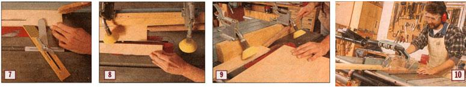

ERIC O'CONNELL
Commercial feather boards are available; I have one that locks in place in the miter gauge slot and features a metal arm that helps hold the wood down on the tabletop as well (photo 7). You might also consider buying a ripping guide like the one in photo 8 (Image Gallery). There are several versions available, but they all work similarly. Spring-loaded rollers press the wood down and toward the fence and roll in only one direction, eliminating the risk of kickback. You need an extra long push stick, as shown in photo 9 (see Image Gallery), to get the material all the way past the blade.